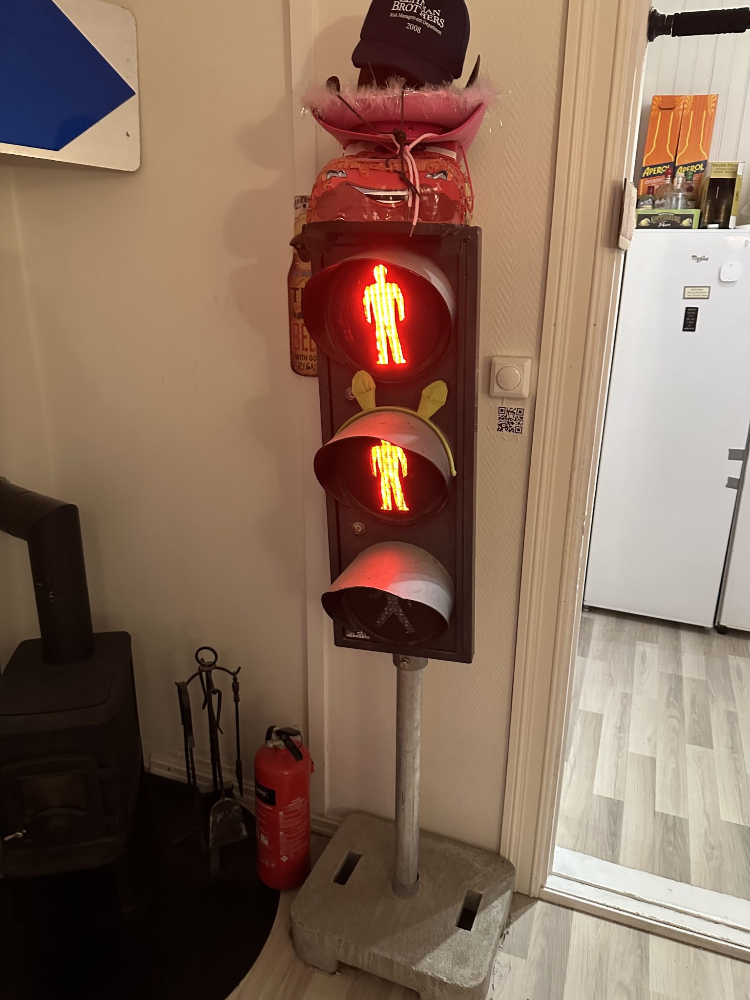

A real traffic light, under our control
A genuine pedestrian traffic light arrived as a Christmas gift in late 2023, legitimately acquired, but with no driving electronics. The original controller had been on a separate pole that did not come with it. The project, then: get the thing to light up, then keep going.
Step 1: getting it open
I 3D-printed an opening tool, took the front off, and figured out the wiring. The original logic had lived elsewhere; the cables coming out of the pole were one per lamp, each switched by whether or not it saw 240V AC. So control meant switching three independent mains connections.

Step 2: Raspberry Pi + relays
- A Raspberry Pi Zero 2 sits inside the housing. The original casing has plenty of dead volume, so it fits cleanly out of sight.
- Three mains-rated relays, one per lamp, switched from the Pi's GPIO.
- Each lamp is either fully on or fully off. There is no PWM here, just clean AC switching.
Step 3: web UI
A small web app runs on the Pi, served on the local network at
trafikklys.local via mDNS. From any phone in the house: pick a
mode, run a sequence, trigger one-off effects.

trafikklys.local. Direct lamp control from any phone on the LAN.
Step 4: Sonos-reactive party mode
Hooked into the room's Sonos system. The light blinks along with whatever the speakers are playing, and a separate "drinking games" mode runs scripted timed sequences: green when it is your turn to drink, red when it is not. The most used feature by a wide margin, beating both the original lamp function and the music-reactive mode.

What I learned
That hardware projects need a product brain, not just an engineering one. The feature I considered the headline (music-reactive) got shown to people once and never demanded again. The scripted party mode is what people actually use. And: when the load is mains-rated, you spend more time double-checking your relay wiring than being clever in software. That is a healthy ratio.
Honestly, the whole project was a lot easier than I expected.
Writeup
A short Norwegian writeup with photos of the light in each state lives in the repo: